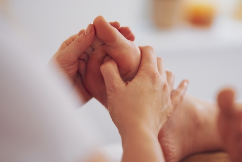
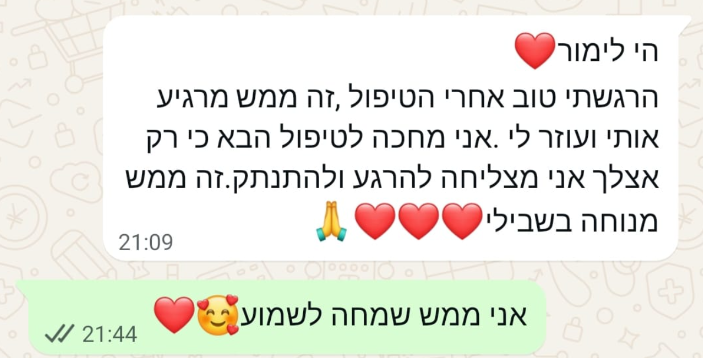
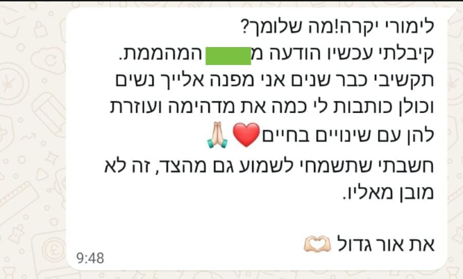

רפלקסולוגיה
טיפול במגע בכפות הרגליים, המותאם לתחושה ולהעדפות שלך.
לפעמים צריך רק להקשיב לו.
להקשיב פנימה
אולי את מתמודדת עם עייפות מתמשכת, מתח ולחץ, שינה לא רציפה ואת מבקשת תשובות לכך,
אולי את נמצאת בתקופה של שינויים הורמונליים או מתמודדת עם חוסר איזון בבלוטת התריס, ומחפשת דרך נוספת לתמוך בגוף לצד המעקב והטיפול הרפואי,
אולי את נמצאת במסע לקראת היריון, מנסה להרות באופן טבעי, עוברת טיפולי פוריות או פשוט מרגישה שאת זקוקה למעטפת תומכת ורגועה יותר בתקופה המורכבת הזו,
ואולי את כבר בהיריון ומתמודדת עם עייפות, עומס, מתח, שינויים בגוף או חששות לקראת הלידה, ורוצה להגיע לרגע הזה רגועה, מחוברת ומוכנה יותר.
גם בתקופה שאחרי הלידה, כשהגוף והנפש עוברים שינוי גדול, לפעמים כל מה שצריך הוא מקום שמאפשר לעצור, לנשום ולקבל טיפול שמותאם אלייך.
דרך של איזון

טיפול במגע בכפות הרגליים, המותאם לתחושה ולהעדפות שלך.
ליווי רפלקסולוגי תומך לצד המעקב והטיפול הרפואי.
מפגש המותאם לשלב ההיריון, לנוחות שלך ולצרכים שעולים.
הכנה ותמיכה רפלקסולוגית לקראת הלידה ובתיאום עם הצוות המטפל.
מרחב רגוע לעצירה, הקשבה ומגע מותאם, בהתאם להעדפות שלך.
קולות מהדרך
זה מה שנשים מספרות אחרי הטיפול...

היי לימור, הרגשתי טוב אחרי הטיפול, זה ממש מרגיע אותי ועוזר לי. אני מחכה לטיפול הבא, כי רק אצלך אני מצליחה להירגע ולהתנתק. זה ממש מנוחה בשבילי. אני ממש שמחה לשמוע.

לימורי יקרה, מה שלומך? קיבלתי עכשיו הודעה מהשם שמוסתר בתמונה. תקשיבי, כבר שנים אני מפנה אלייך נשים, וכולן כותבות לי כמה את מדהימה ועוזרת להן עם שינויים בחיים. חשבתי שתשמחי לשמוע גם מהצד, זה לא מובן מאליו. את אור גדול.
אשמח לשמוע עלייך ולמצוא יחד את הדרך המדויקת עבורך.